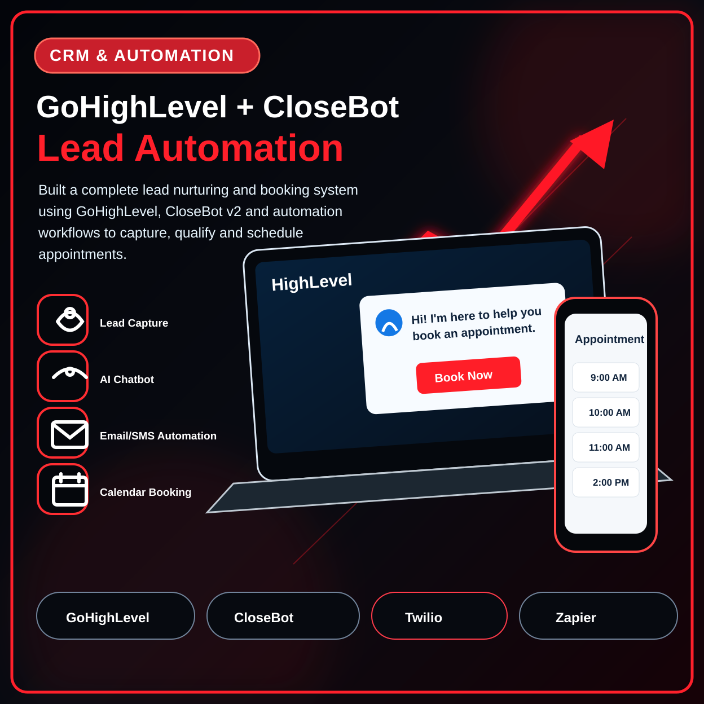

01 · CRM ENGINEERING & PERFORMANCE ANALYTICSSalesforce & Smartphone Call Analytics System
Built the missing bridge between Smartphone call activity and Salesforce reporting.
- Configured the native Smartphone package and record-triggered Salesforce Flows.
- Automated Speed-to-Lead calculations from lead creation to first outbound contact.
- Designed real-time executive dashboards for call activity, agent performance and KPIs.